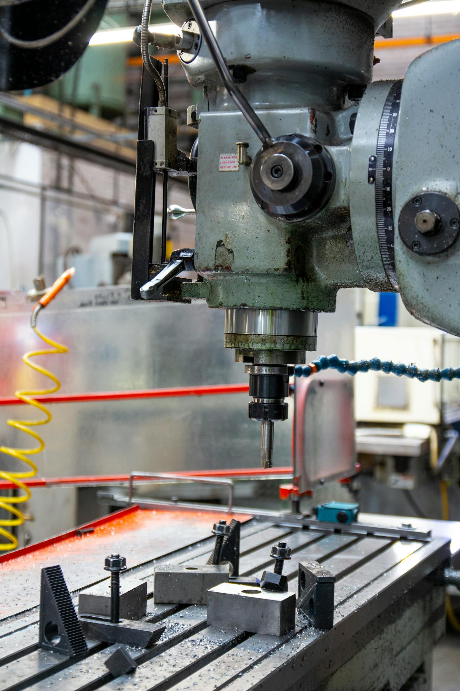

Capacità produttiva
Le specifiche, senza giri di parole.
Ø 320 mm
Diametro massimo tornibile, barra o fusione.
±2 µm
Tolleranza dimensionale in produzione di serie.
Ra 0.2
Finitura superficiale raggiungibile con rettifica.
1 → 100k
Lotti da pezzo singolo a grande serie automatizzata.
Materiali
Quello che lavoriamo ogni giorno.
Selezioniamo utensili e parametri di taglio in base al materiale, per garantire finitura e durata utensile anche sui metalli più ostici.
Acciai da bonificaInox AISI 303/316Titanio
Alluminio 7075OttoneLeghe nichelMaterie plastiche tecniche

Come lavoriamo
Dal disegno al pezzo collaudato.
01
Analisi disegno
Fattibilità, scelta materiale e attrezzaggio. Offerta in 48 ore.
02
Programmazione
CAM e setup macchina, campione di prima articolo (FAI).
03
Produzione
Ciclo automatizzato con controllo statistico di processo.
04
Collaudo & consegna
Rapporto dimensionale CMM, tracciabilità, spedizione puntuale.